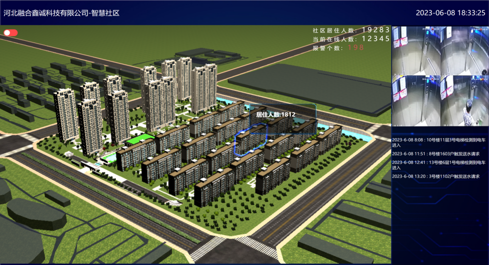
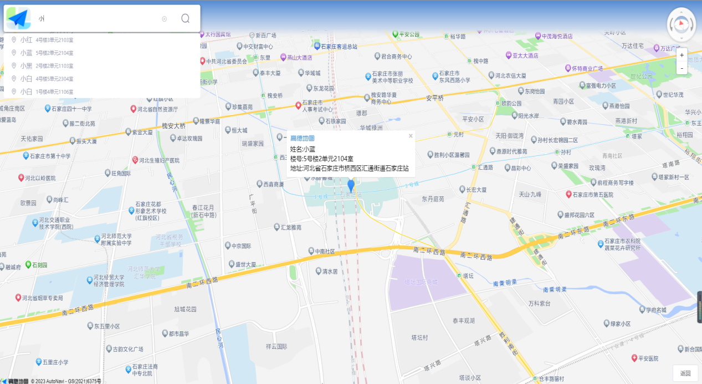

我们经常会看到或听到某位老人走丢了，家人们四处打听寻找的事情，还有某某小区又因为电动车在家充电而引发火宅而发生的悲剧。综上所述，我们的智慧社区监管平台设计出发点是，为了解决社区内老人在家生活不方便、意外走失的问题，且能够通过电梯监控摄像头检测电车上楼的情况，预防火灾的发生
通过3D技术展示社区鸟瞰图，提供查看每栋楼人员居住情况以及电梯内摄像头监控图像信息的功能，电梯监控支持图像识别，可控电车进入电梯，当电车进入电梯可采取语音警告（摄像头支持语音播放）的方式警告业主，从而降低因电车充电而引发火灾的悲剧发生；同时还能够实时显示用户向社区发送的求助信息，方便社区工作人员及时解决业主的生活问题。
定位界面主要是我们社区工作人员通过为业主配发的定位设备，查询人员当前所在位置，以便我们解决家中老人意外走失情况下，快速搜寻、定位，可将定位信息发送到家人手机。便于导航，快速寻找，降低意外发生。
